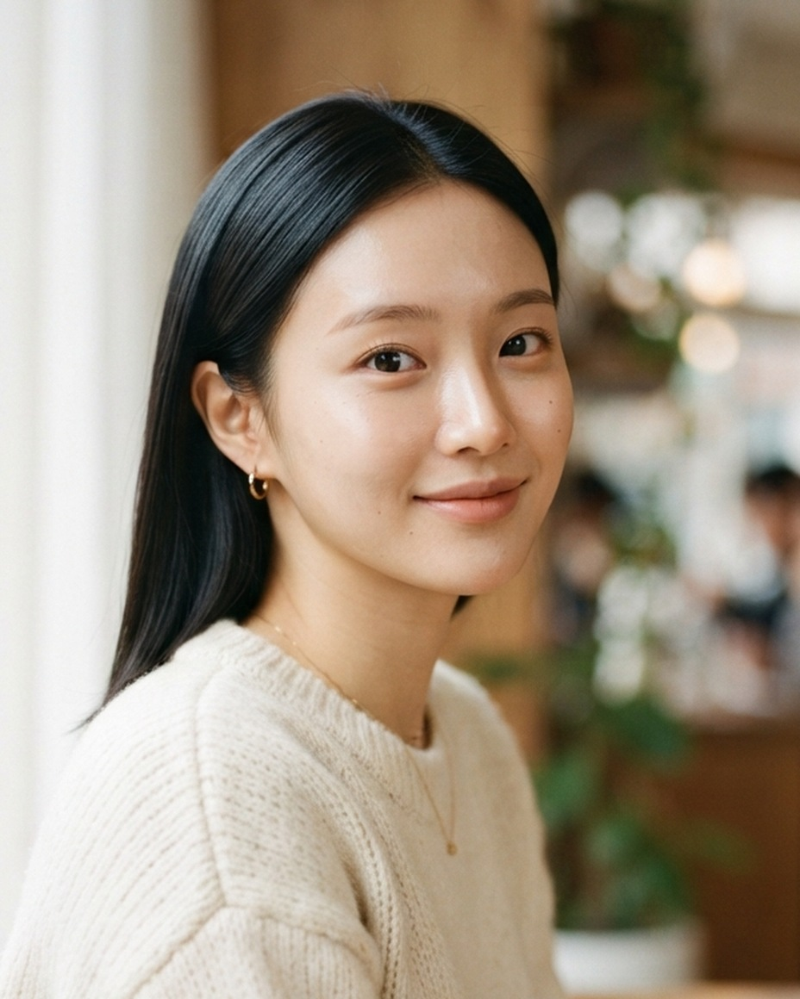
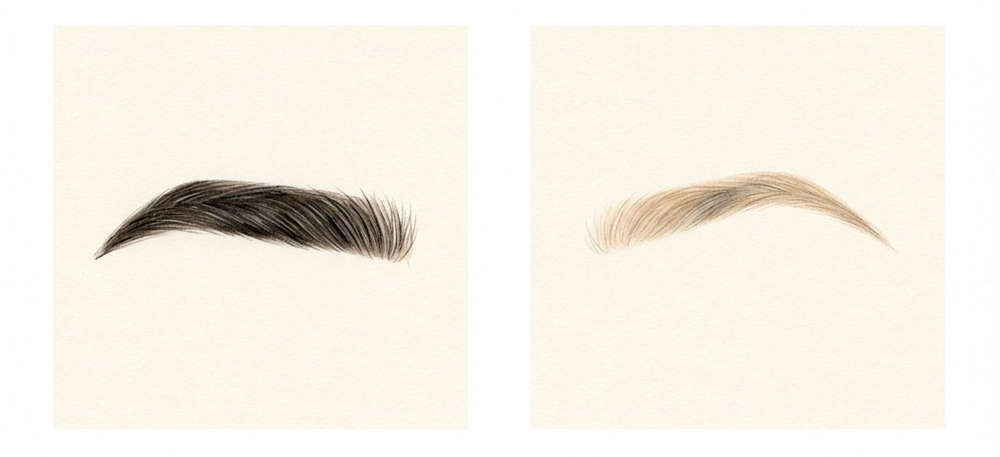
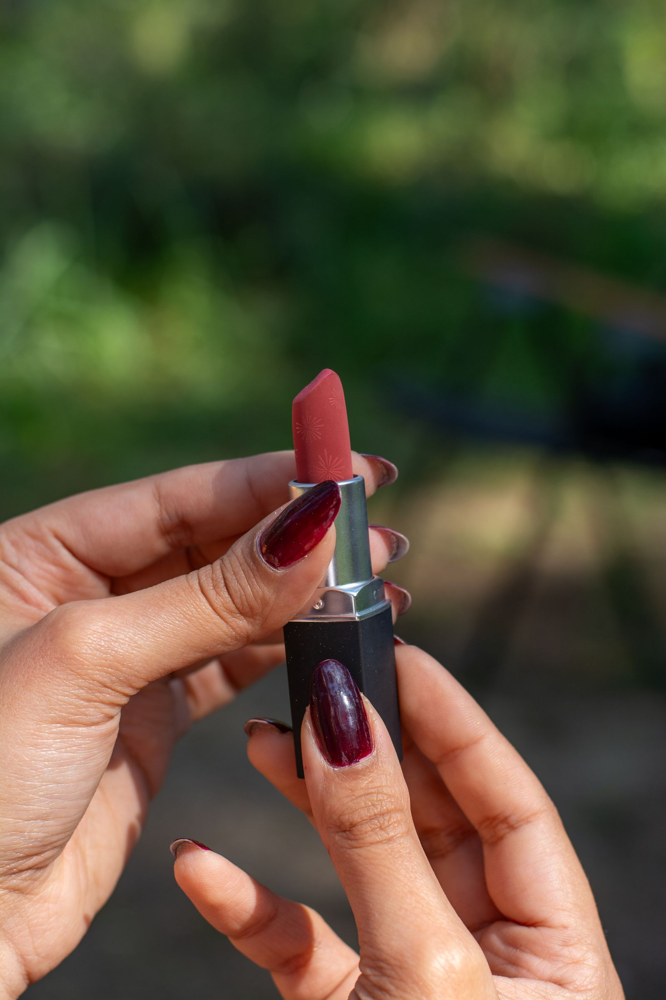
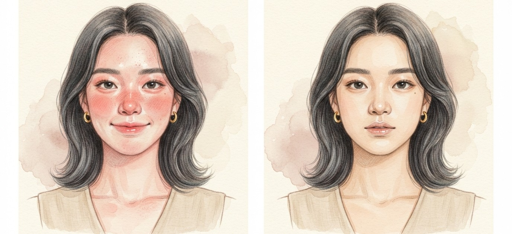
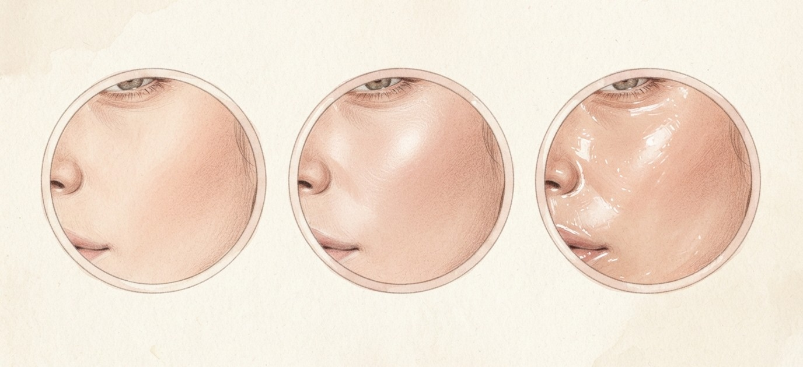
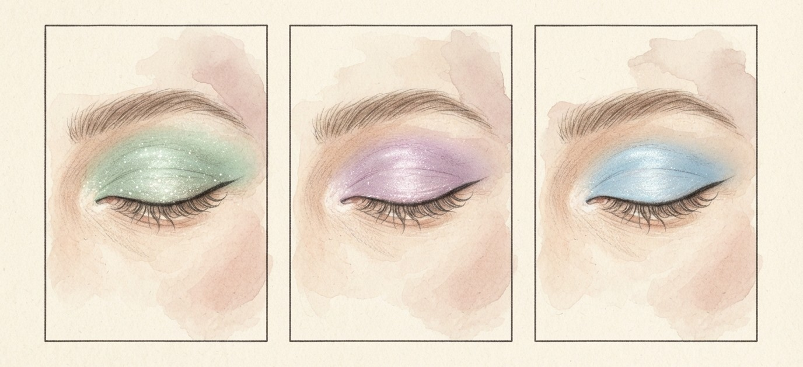

가을 메이크업 트렌드 5가지,
이것만 기억하세요.

90년대 무드의 가느다란 아치형 눈썹. 펜으로 그린 듯 얇은 눈썹이 답답해 보이던 인상을 가볍게 만들어줘요.

베이지·브라운·로즈 브라운처럼 차분한 컬러. 존재감을 강하게 주장하지 않지만 묘하게 기억에 남는 색이에요.

여름의 썬번 메이크업과 정반대. 치크를 생략하거나 있는 듯 없는 듯 아주 얇게 올리는 안티 블러시예요.

피부 결은 살리면서 은은한 유리알 광택. 어떤 룩에도 자연스럽게 어울리는 게 장점이에요.

민트·라일락처럼 평소 잘 안 쓰는 컬러를 포인트로. 쉬머 텍스처를 더하면 은은하게 빛나요.
다섯 가지를 다 하지 않아도 돼요. 치크를 빼고 립을 멀멀하게,
이 두 가지만 바꿔도 가을 얼굴이 돼요.
저장해두고 쇼핑할 때 꺼내보세요